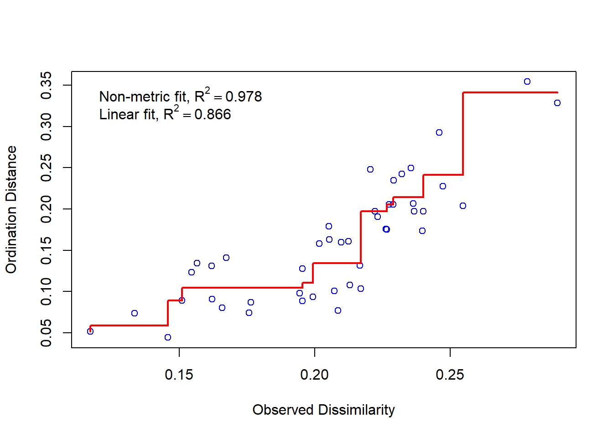
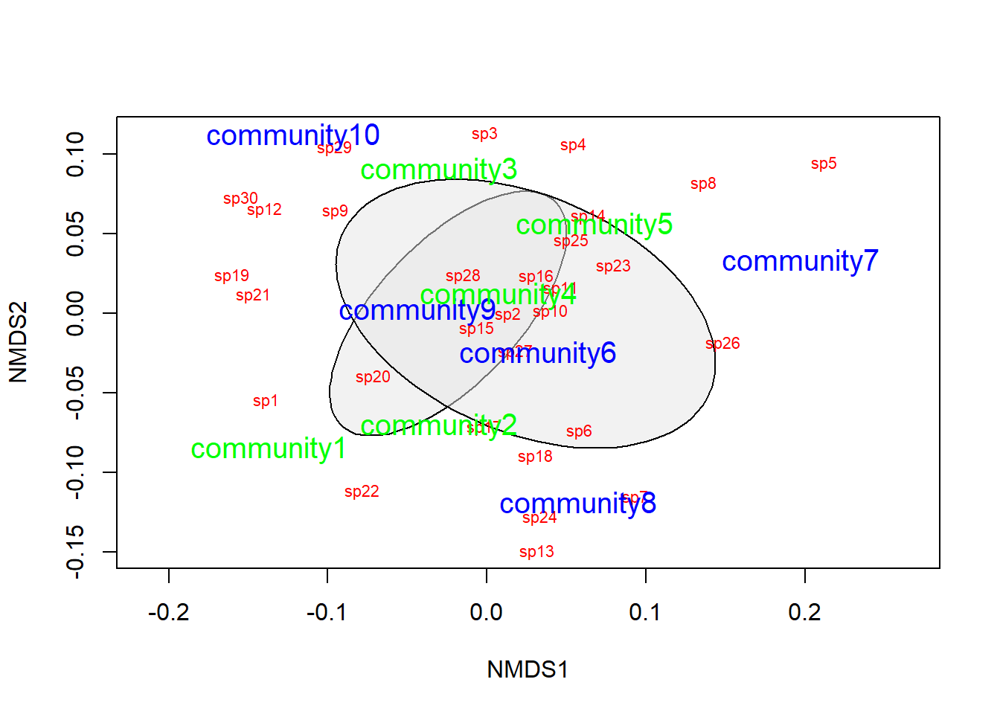

Intro to multivariate statistics
Introduction
This week, we are moving into a very different realm of quantitative biology. For the first two thirds of this class, we focused on what to do in specific situations for which we were dealing only with a single, independent response at a time. These methods have taken us a long way along the road from dealing with comparisons of distributions, means, and examining correlations and effect sizes in a generalized modeling framework used to analyze univariate and bivariate relationships with one response and one or more explanatory variables of interest. We have cast this largely as a framework for modern hypothesis testing through deductive and inductive inference.
Now, we will set all of this aside for a couple of weeks and move into the realm of descriptive and exploratory data analyses in those cases for which we have multiple response variables that are related to one another. This can be a rather common problem in biology and ecology because of the interelatedness of variables in natural systems. Very often, our goal is not to test a specific hypothesis but rather to do some exploratory analyses that describe the patterns that we see in complex systems and help us to develop hypotheses that we might test down the road with other methods. This is the realm of multivariate data analysis!
Principle component analysis
Overview
Principle component analysis (PCA) is a tool for ordination, and exploring associations between multiple response variables. The objectives for using PCA can range from classification to reduction of dimensionality in the number of phenomena we are interested in. Generally speaking, this tool is largely descriptive, and almost wholly exploratory, but it can also be used to generate hypotheses that we can then test within more-robust statistical frameworks following further data collection. Another nifty use of PCA is that we can use the ordinations that result as variables in regression analyses if we see fit, and as a result we can drastically decrease the number of parameters that need to be estimated, improving accuracy and precision in our estimates. The problem with this, of course, is that we lose something with respect to the ease of interpretation.
Worked example
Adapted from Thiago G. Martins (2013). Let’s use the iris data in R to demonstrate the application of PCA in R through a worked example.
# Load data
data(iris)
# Have a look at the data
head(iris, 10)## Sepal.Length Sepal.Width Petal.Length Petal.Width Species
## 1 5.1 3.5 1.4 0.2 setosa
## 2 4.9 3.0 1.4 0.2 setosa
## 3 4.7 3.2 1.3 0.2 setosa
## 4 4.6 3.1 1.5 0.2 setosa
## 5 5.0 3.6 1.4 0.2 setosa
## 6 5.4 3.9 1.7 0.4 setosa
## 7 4.6 3.4 1.4 0.3 setosa
## 8 5.0 3.4 1.5 0.2 setosa
## 9 4.4 2.9 1.4 0.2 setosa
## 10 4.9 3.1 1.5 0.1 setosa# Apply a log transformation to the morphometric data to make sure that
# we are working on a normal(ish) distribution and get rid of skew
log.ir = log(iris[, 1:4])
ir.species = iris[, 5]Run the PCA. In most cases, we want to work with standardized values to avoid effects of variable scale on our interpretation of the results, so we center and scale the variables inside the call to prcomp.
ir.pca = prcomp(log.ir, center = TRUE, scale. = TRUE)
# Print the results for our PCA
print(ir.pca)## Standard deviations (1, .., p=4):
## [1] 1.7124583 0.9523797 0.3647029 0.1656840
##
## Rotation (n x k) = (4 x 4):
## PC1 PC2 PC3 PC4
## Sepal.Length 0.5038236 -0.45499872 0.7088547 0.19147575
## Sepal.Width -0.3023682 -0.88914419 -0.3311628 -0.09125405
## Petal.Length 0.5767881 -0.03378802 -0.2192793 -0.78618732
## Petal.Width 0.5674952 -0.03545628 -0.5829003 0.58044745The summary of the PCA includes the standard deviations of each of the four principle components, in addition to their rotations (loadings).
We can also look at a plot of how the standard deviation of our principle components decreases with increasing the number of components used to describe the variation.
# We can look at a barplot of this (default)
plot(ir.pca)# But a line graph is a little easier to interpret
plot(ir.pca, type='l', lwd=2, col='blue')These plots help us determine how many of the principle components we need to retain for further analyses. In this case, it is pretty clear to see that we probably only need to keep the first two components of the PCA to achieve an adequate description of the data. After that point, the amount of variation that we explain trails off very quickly.
For a more-reliable approach to this, we can also look at the summary of our PCA to compare relative importance of the different components and the amount of variation that each explains.
summary(ir.pca)## Importance of components:
## PC1 PC2 PC3 PC4
## Standard deviation 1.7125 0.9524 0.36470 0.16568
## Proportion of Variance 0.7331 0.2268 0.03325 0.00686
## Cumulative Proportion 0.7331 0.9599 0.99314 1.00000Let’s take a closer look. Our summary provides us with the following info for each of the principle components in our analysis
Standard deviation- sd associated with each principle component
Proportion of variance- variance explained by each component
Cumulative proportion- total variance explained by our model
A couple of things should jump right out at you here. Right off the bat, it is clear that the first component explains the most variance, and that additions beyond the second component improve the picture minimally at best. Second, by the time we reach the second component, we have explained 96% of the total variance in our data, so we shoulde be pretty happy with this. The take home is that these data will be conducive to projecting our data in 2-dimensional space!
There are multiple tools for visualizing our data in 2-d space (commonly referred to as a “biplot”)
For the “prettier” option, you will need to install a couple of packages Note that if you want to install devtools, you will first need to install Rtools utililities here.
# devtools package
#install.package('devtools')
library(devtools)
# ggbiplot and vqv packages from a git hub repository
#install_github("ggbiplot", "vqv")
library(ggbiplot)The ggbiplot package makes some pretty nice biplots, but the syntax for these plots (and other ggplot* packages) is quite different from what we have been working with in the base graphics.
# First, we have to specify the graphical parameters
# in the function
g = ggbiplot(ir.pca, obs.scale = 1, var.scale = 1,
groups = ir.species, ellipse = TRUE,
circle = TRUE)
# Now we specify the colors that we want to use
g = g + scale_color_discrete(name = '')
# Add a legend
g = g + theme(legend.direction = 'horizontal',
legend.position = 'top')
# And finally, we can actually print the biplot
# to our graphics device
print(g)
If you have difficulty loading these packages, we could go ahead and make a very clunky biplot with base graphics, but this doesn’t really give us the nice explanation that we get from ggbiplot.
# Plot the PCA
biplot(ir.pca)
We can extract the raw PCA output and use this, too. This will get us a nicer representation of the data in 2-d space and will show us how our species fall out with respect to the first two components.
# Plot the PCA (again)
biplot(ir.pca)
# Plot the points with species-specific colors
raw = ir.pca$x[,1:2]
points(raw[,1], raw[,2], col=rainbow(3)[ir.species], pch=20)Multivariate analysis of variance (MANOVA)
This is great for visualizing data, but what if we actually want to test the hypothesis that these species differ with respect to their morphometric features? For this, we will need to use a technique such as the multivariate analysis of variance. Conveniently, this can actually be fit in R using the lm function with which you are very familiar (not going too far into it, we can say that PCA is a further generalization of the GLMMs with which we have been working).
# Let's start by shortening the names to make the code shorter:
names(iris) <- c("SL", "SW", "PL", "PW", "SPP")
# Now, we can fit a MANOVA to see if the species differ WRT traits
manova.iris <- lm(cbind(SL, SW, PL, PW) ~ SPP, data=iris)We can summarize the statistical results, and we see that there are significant differences across responses between species.
# Load the car package
library(car)
# Do the type II Anova test on the object
results = Anova(manova.iris)
# Print the overall results, default is Pillai's statistical test
print(results)##
## Type II MANOVA Tests: Pillai test statistic
## Df test stat approx F num Df den Df Pr(>F)
## SPP 2 1.1919 53.466 8 290 < 2.2e-16 ***
## ---
## Signif. codes: 0 '***' 0.001 '**' 0.01 '*' 0.05 '.' 0.1 ' ' 1# Or, you could look at several different significance tests for this.
# In this case they all tell us the same thing
summary(results)##
## Type II MANOVA Tests:
##
## Sum of squares and products for error:
## SL SW PL PW
## SL 38.9562 13.6300 24.6246 5.6450
## SW 13.6300 16.9620 8.1208 4.8084
## PL 24.6246 8.1208 27.2226 6.2718
## PW 5.6450 4.8084 6.2718 6.1566
##
## ------------------------------------------
##
## Term: SPP
##
## Sum of squares and products for the hypothesis:
## SL SW PL PW
## SL 63.21213 -19.95267 165.2484 71.27933
## SW -19.95267 11.34493 -57.2396 -22.93267
## PL 165.24840 -57.23960 437.1028 186.77400
## PW 71.27933 -22.93267 186.7740 80.41333
##
## Multivariate Tests: SPP
## Df test stat approx F num Df den Df Pr(>F)
## Pillai 2 1.19190 53.4665 8 290 < 2.22e-16 ***
## Wilks 2 0.02344 199.1453 8 288 < 2.22e-16 ***
## Hotelling-Lawley 2 32.47732 580.5321 8 286 < 2.22e-16 ***
## Roy 2 32.19193 1166.9574 4 145 < 2.22e-16 ***
## ---
## Signif. codes: 0 '***' 0.001 '**' 0.01 '*' 0.05 '.' 0.1 ' ' 1Non-metric multidimensional scaling
Overview
Non-metric multidimensional scaling (NMDS) is very similar in nature to PCA, but can be considerabbly more flexible. Whereas PCA relies primarily on the assumption of linearity to do ordination, NMDS makes no such assumption, working rather on ranks, and as a result can take a variety of data for analyses. For example, because of the ability to use similarity matrices other than the Euclidean distance matrix used in PCA, NMDS allows us to better handle non-normal data, but also things like missing and null data (which PCA cannot handle).
Worked example front end adapted from Jon Lefcheck
Let’s have a look at an example that uses some simulated community data to show how we run the analyses, do some data visualization, and interpret the results.
# install.packages('vegan') # Uncomment to install
library(vegan)
# Let's start by simulating some data that we can use for this example
# Set the seed for reproducibility
set.seed(2)
# Now, simulate the data. We tell R to turn the data into a matrix right up
# front
community_matrix = matrix(
# Take 300 samples between 1 and 100, with replacement
sample(1:100, 300, replace=T),
# Tell R that we want the matrix we are making to have 10 rows, so
# it will have 30 columns by default
nrow=10,
# We will call the rows community 1 through 10 and the columns will be
# species 1 through 30
dimnames=list(paste("community", 1:10, sep=""), paste("sp", 1:30, sep=""))
)
# We define two treatments, separately from the matrix to which we will
# assign the communities.
treat=c(rep("Treatment1",5),rep("Treatment2",5))Now, we will fit the NMDS using the metaMDS function in the vegan package
# Fit the NMDS
example_NMDS=metaMDS(
community_matrix, # Community-by-species matrix
k=2 # The number of reduced dimensions we want to use
)## Square root transformation
## Wisconsin double standardization
## Run 0 stress 0.1280709
## Run 1 stress 0.1280709
## ... Procrustes: rmse 3.168062e-05 max resid 5.925658e-05
## ... Similar to previous best
## Run 2 stress 0.2630959
## Run 3 stress 0.1424254
## Run 4 stress 0.1778004
## Run 5 stress 0.1280709
## ... New best solution
## ... Procrustes: rmse 8.669277e-06 max resid 1.508905e-05
## ... Similar to previous best
## Run 6 stress 0.1752059
## Run 7 stress 0.1624619
## Run 8 stress 0.1280709
## ... Procrustes: rmse 3.499232e-05 max resid 6.594091e-05
## ... Similar to previous best
## Run 9 stress 0.1624619
## Run 10 stress 0.128071
## ... Procrustes: rmse 7.130361e-05 max resid 0.0001196693
## ... Similar to previous best
## Run 11 stress 0.206671
## Run 12 stress 0.1424254
## Run 13 stress 0.157268
## Run 14 stress 0.2023676
## Run 15 stress 0.1461475
## Run 16 stress 0.1280709
## ... Procrustes: rmse 4.588009e-06 max resid 8.034253e-06
## ... Similar to previous best
## Run 17 stress 0.1280709
## ... New best solution
## ... Procrustes: rmse 6.914407e-06 max resid 1.306718e-05
## ... Similar to previous best
## Run 18 stress 0.2028469
## Run 19 stress 0.1624619
## Run 20 stress 0.1778003
## *** Solution reached# Let's take a look at the summary to make sure we know what is going on here
print(example_NMDS)##
## Call:
## metaMDS(comm = community_matrix, k = 2)
##
## global Multidimensional Scaling using monoMDS
##
## Data: wisconsin(sqrt(community_matrix))
## Distance: bray
##
## Dimensions: 2
## Stress: 0.1280709
## Stress type 1, weak ties
## Two convergent solutions found after 20 tries
## Scaling: centring, PC rotation, halfchange scaling
## Species: expanded scores based on 'wisconsin(sqrt(community_matrix))'# Take a look at the stress plot for the ordination
stressplot(example_NMDS)
Now we can plot the ordination for our NMDS given that we are satisfied with the stress parameter and the convergence
# First, make a blank plot of the nmds
ordiplot(example_NMDS, type="n")
# Now, we can add some ellipses to show
# the grouping indicated by nmds
ordiellipse(example_NMDS,
groups=treat,
draw="polygon",
col="grey90",
label=F)
# Add the raw species data. Note that no
# matter what the columns actually represent,
# you will always use `species` for these
# plots because that is what these tools
# were originally designed for.
orditorp(example_NMDS,
display="species",
col="red",
air=0.01
)
# Next, add the `communities` to the plot.
# Same as above, these will always be called
# `sites` even if that isn't what your rows
# represent. It is just a convention based
# on the purpose for which the tools were built.
orditorp(example_NMDS,
display="sites",
col=c(rep("green", 5),
rep("blue", 5)
),
air=0.01,cex=1.25
)
That looks pretty good, but we need to do some actual statistics if we want to draw inferences about how the species in this community tend to cluster together.
To do this, we will use analysis of similarities (ANOSIM) to determine whether the dissimilarities between groups is greater than the dissimilarities between species within the groups. In order to do this, we need to provide two things:
- We need to give R a data matrix, which can be
- the matrix or data frame that we started with, or
- a dissimilarity matrix
- We need to tell R what the grouping variable is, in this case it is treat
Let’s take a look at the dissimilarity matrix, just so we have an idea what we are dealing with here:
vegdist(community_matrix)## community1 community2 community3 community4 community5
## community2 0.3837249
## community3 0.3969325 0.3915228
## community4 0.3676043 0.3141153 0.3020054
## community5 0.2930762 0.3290155 0.2887716 0.3822441
## community6 0.3758865 0.2916289 0.3292952 0.2490620 0.3233380
## community7 0.4805793 0.3405332 0.3274498 0.3222187 0.3264346
## community8 0.4349091 0.3099065 0.4229486 0.3210880 0.4139952
## community9 0.5052823 0.4082397 0.4006014 0.3906582 0.3839779
## community10 0.4100935 0.3684615 0.4594595 0.3352685 0.3029016
## community6 community7 community8 community9
## community2
## community3
## community4
## community5
## community6
## community7 0.2744868
## community8 0.2709801 0.4445245
## community9 0.2871351 0.3229881 0.3942811
## community10 0.3219560 0.3432062 0.3178616 0.3347176This matrix gives a measure of distance between any two communities in the data with respect to the species that those communities contain. If we use ANOSIM to test for differences between treatment1 and treatment2, what we are really testing is the null hypothesis that the dissimilarity between communities in different treatments is less than or equal to the dissimilarity between communities in the same treatments. If we reject this null hypothesis, then the alternative is that communities exposed to the different treatments are more different from one another than communities that are exposed to the same treatment.
# Fit the ANOSIM model
test = anosim(vegdist(community_matrix), grouping = treat)
summary(test)##
## Call:
## anosim(x = vegdist(community_matrix), grouping = treat)
## Dissimilarity: bray
##
## ANOSIM statistic R: 0.328
## Significance: 0.022
##
## Permutation: free
## Number of permutations: 999
##
## Upper quantiles of permutations (null model):
## 90% 95% 97.5% 99%
## 0.172 0.248 0.288 0.340
##
## Dissimilarity ranks between and within classes:
## 0% 25% 50% 75% 100% N
## Between 1 17.00 27 38.00 45 25
## Treatment1 5 8.75 23 29.75 35 10
## Treatment2 2 6.00 15 24.25 42 10Here, we see that the dissimilarity between classes is greater than the dissimilarity within classes (p = 0.022), so we reject the null hypothesis. Do be careful to understand that the ANOSIM statistic R is not the same as the correlation coefficient r.
To quote the R documentation:
“If two groups of sampling units are really different in their species composition, then compositional dissimilarities between the groups ought to be greater than those within the groups. The anosim statistic R is based on the difference of mean ranks between groups (rB) and within groups (rW):
\[R = \frac{(r_B - r_W)}{\frac{N \times (N - 1 )}{4}}\]
The divisor is chosen so that R will be in the interval -1 … 1, with a value of 0 indicating completely random grouping.
The statistical significance of observed R is assessed by permuting the grouping vector to obtain the empirical distribution of R under null-model. See permutations for additional details on permutation tests in vegan. The distribution of simulated values can be inspected with the permustats function."
Copyright © 2017 Dan Stich. All rights reserved.